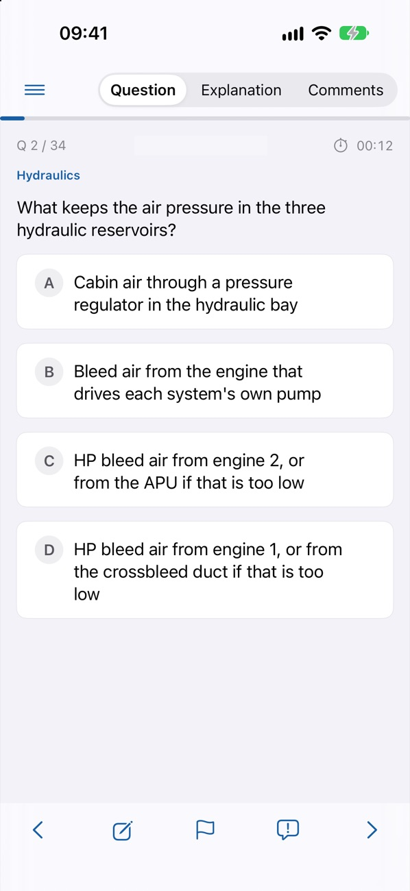
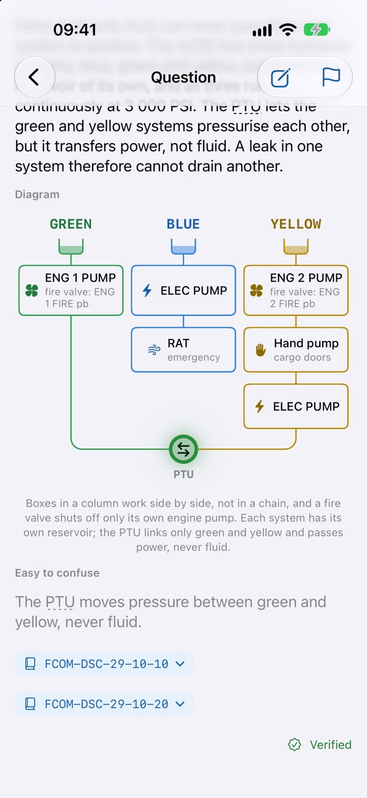

Try one: Hydraulics
Choose an answer to see why.
Why
Losing the green system takes away reverser 1, landing gear retraction and normal braking. Braking continues on the yellow system, as alternate braking with anti-skid. Reverser 2 belongs to the yellow side, so it stays available.
Easy to confuse
Alternate braking uses the yellow system, so it remains after a green loss; normal braking is the one lost.
FCOM-PRO-ABN-HYD · FCOM-DSC-70-70
Learn where to find the answer, and why
Explanations say why, name the manual section to look it up in, and show the system in a diagram where that helps.

